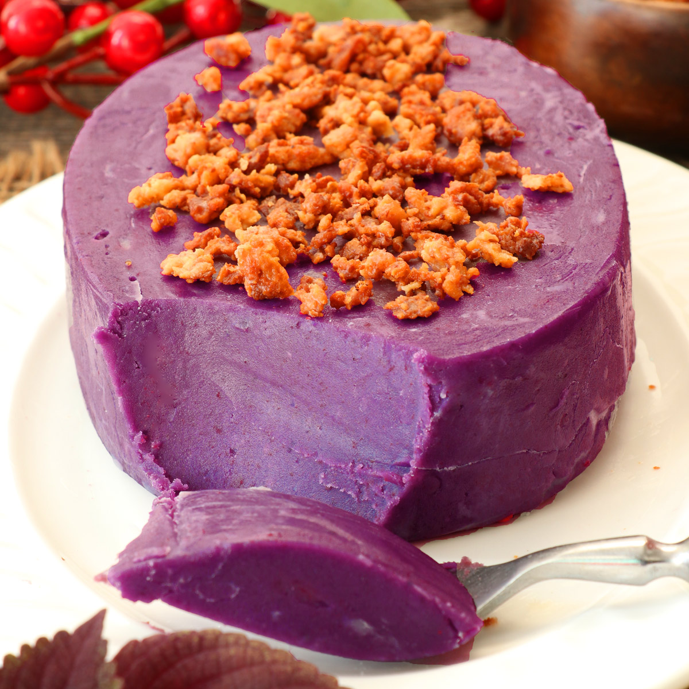

Ube Halaya

Description
Ube Halaya is a type of Filipino Dessert made from purple yam. There are quite a few ways of preparing this dish. Some Ube halaya version makes use of condensed milk to cook the yam with, while others depend on coconut milk. This version only uses 3 major ingredients: purple yam, coconut milk, and sugar
Ingredients
- 1 lb. grated purple yam
- 2 cups coconut milk
- 3/4 cup granulated white sugar
- 1 teaspoon cooking oil
Steps
- Pour the coconut milk in a cooking pot. Bring to a boil.
- Once the coconut milk start to boil, add the sugar. Stir until the sugar dilutes completely.
- Put-in the grated purple yam. Continue to cook while stirring (using low to medium heat) until the texture gets thick. Note: It will take around 20 to 30 minutes. Please be patient.
- Grease the llanera with cooking oil. Transfer the ube halaya to the greased llanera to mold it into shape.
- Let it cool down to room temperature. You can serve it immediately of place it in the refrigerator (covered with cling sap).
- Share and enjoy!